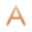
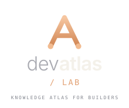
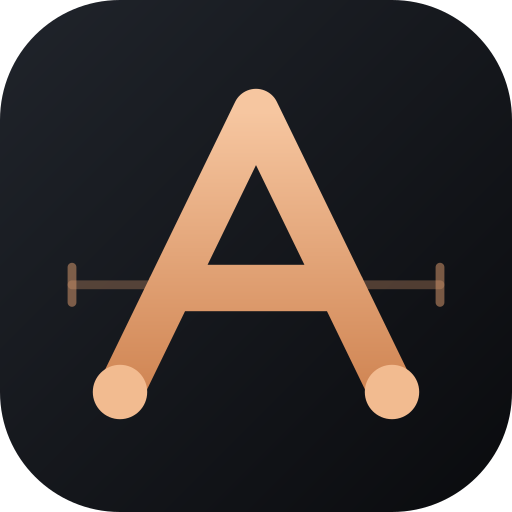
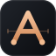

Brand system · v1.0 · 2026
An atlas for the builder’s path.
Dev Atlas Lab is a personal knowledge atlas: routes through software engineering, DevOps, architecture, AI and cloud. The identity borrows the language of navigation — a letterform that is also a trail, waypoints that mark how far you have come.
The mark
A waypoint “A” on a survey line. Read literally: the atlas letter, a summit, two base camps. Read as a system: every stop is a domain you have mapped.

-
01
Summit = direction The apex is where the two routes meet: the goal you are navigating toward, not a finish line.
-
02
Waypoints = progress The two nodes are base camps. Learning is a sequence of mapped stops, not a single jump.
-
03
Survey line = the atlas The crossbar meets a measured latitude. The app icon keeps that line; small sizes drop it.
- Grid
- 64 units
- Stroke
- 5.8 units, round caps
- Nodes
- r 3.4, at the feet
- Clearspace
- 0.5× mark height
Lockups
The horizontal lockup is the default. Use the stacked version when width is not available. The wordmark sets “dev” light and “atlas” semibold: the atlas is the subject.

Minimum sizes
Horizontal lockup: 160 px wide on screen, 32 mm in print. Stacked lockup: 120 px wide. Below that, use the mark on its own.
Icon, avatar, favicon
The ink tile carries the mark wherever a square is required. The survey line stays at large sizes and is removed in the 16 px favicon.

128avatar
64app iconColour
Ink and copper: a dark drafting table with one warm signal. Copper is the only accent in the identity — everything else is a neutral. Select a swatch to copy its hex.
Neutral text: #F4F1EA · #A9AAB1 · #82858E / light theme: #14161A · #4F535C · #6E727B
Typography
One neutral grotesque for names and prose, one monospace for coordinates, labels and the “LAB” suffix. Both resolve from system fonts — no webfont requests.
Weights 300 and 600, tracking −0.02em. “dev” recedes, “atlas” carries the name.
Sections, lesson copy and controls. Vietnamese diacritics must be checked at 14–16 px before extending the system.
Uppercase, 0.14–0.22em tracking. Used for the LAB suffix, section numbers and file names.
Usage
The mark is simple enough to survive small sizes; keep it that way. These rules protect legibility more than they protect taste.
Do
- Keep clearspace of at least half the mark’s height on every side.
- Use the light lockup on paper, the dark lockup on ink.
- Use the tile icon for avatars and favicons; it is built to be cropped to a circle.
- Use the mono mark for one-colour print, embroidery or stamps.
- Scale the whole lockup proportionally; type stays typeset, not redrawn.
Don’t
- Don’t stretch, shear or rotate the mark.
- Don’t recolour it outside the copper and neutral palette.
- Don’t place the mark on photography or gradients without a solid backing tile.
- Don’t add outlines, shadows, glow or extra waypoints.
- Don’t set “dev atlas” in a different typeface to imitate the wordmark.
Files
SVG is the master format. PNG exports exist only where a platform requires raster: avatars, favicons and social previews.